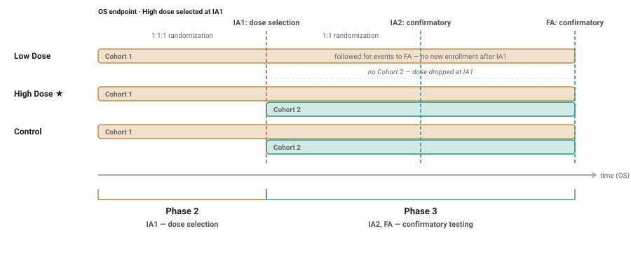

A Multi-Arm Multi-Stage Group Sequential Design for Oncology Survival Trials
Eric Zhang · Eikon Therapeutics
Based on Zhang, E. (P.) & Jin, M. (2025). A Multi-Arm Multi-Stage Group Sequential Phase 2/3 Design with Dose Selection for Oncology Trials. Statistics in Biopharmaceutical Research.

Three hypotheses are in play:
Closed testing: reject H2 overall only if both H2 and H1 ∩ H2 are rejected at the design's α = 0.025.
⭐ github.com/eric-zhang16/gsDose
| Function | Purpose |
|---|---|
gsBoundary() | Group sequential efficacy / futility boundaries for the combination test, via α-spending (O'Brien-Fleming or Hwang-Shih-DeCani) |
combTest() | Combination test statistics for every intersection hypothesis containing the selected dose, with the closed-testing decision |
combDunnett() | Combination Z for one intersection hypothesis (called by combTest()) |
library(gsDose)
# boundary at IA2 (270 events, 231 from cohort 2)
gsBoundary(w = 1, h = h, d = 270, d2 = 231,
s = 3, planD = 520, alpha = 0.025,
sf = 'OF', bt = 'upper')
#> Zbound = 2.90
Full walkthrough: vignette("Introduction", package = "gsDose")
gsdose-skill — a Claude Code skill that turns gsDose into a guided Q&A, then delivers a Word + JSON report with a reproducible R script.
output/gsdose_{indication}_{date}/
|-- deliverables/
| |-- gsdose_report.docx
| |-- gsdose_results.json
| `-- gsdose_reproduce.R
`-- supporting/
|-- configs (json)
`-- scripts usedZhang, E. (P.) & Jin, M. (2025). A Multi-Arm Multi-Stage Group Sequential Phase 2/3 Design with Dose Selection for Oncology Trials. Statistics in Biopharmaceutical Research. doi:10.1080/19466315.2025.2539831
Package: github.com/eric-zhang16/gsDose
— remotes::install_github("eric-zhang16/gsDose")
Agent skill: github.com/eric-zhang16/gsdose-skill
Same example, worked through: reject H2 overall only if both Z(H2) and Z(H1 ∩ H2) give p < 0.025.